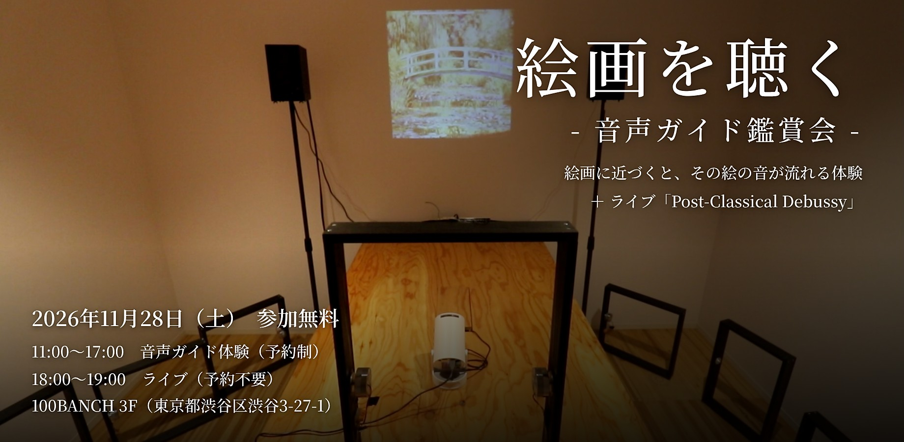

01
開催情報
Information- 日時 2026年11月28日（土）11:00〜20:00
- 体験 音声ガイド体験 11:00〜18:00・19:00〜20:00（予約制）
- ライブ 18:00〜19:00（予約不要・入退場自由）
- 場所 100BANCH 3F（〒150-0002 東京都渋谷区渋谷3-27-1）
- 料金 無料
- 定員 音声ガイド体験 各回5名（1時間ごとの入れ替え制）
02
音声ガイド体験
Audio Guide「絵画を聴く」は、絵画の中に鳴っていたであろう音風景をつくる実践です。会場に並ぶ複製画に近づくと、その絵の音声ガイドが、絵の中に鳴っていたであろう環境音とともに自動で流れ出します。絵から絵へと歩きながら、音で作品の世界に入り込む新たな鑑賞体験ができます。
03
ライブ「Post-Classical Debussy」
Live同日夕方（18:00〜19:00）に、印象派の絵画とドビュッシーをヴァイオリン・電子音・映像で立ち上げ直すライブを行います。曲ごとにモネとゴッホの絵画を1枚ずつ組み合わせ、音と映像で上演します。鑑賞者の脳波と同期する映像も体験できます。
出演：Marcy MIWA（映像）、SYIA（ヴァイオリン）、吉村勇作（脳波同期映像）、金子淳平（編曲・企画）